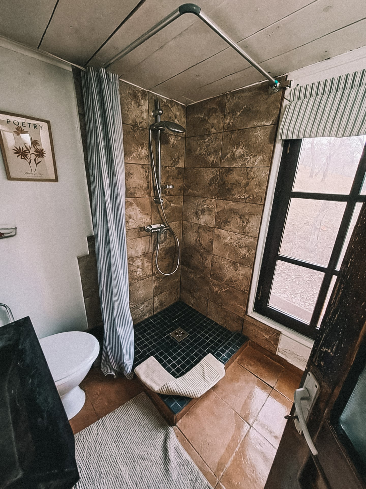

Her touch
The details are hers.




Rares and Gabie keep a small collection of cabins and treehouses on one Transylvanian estate — built by hand, and shaped around the landscape rather than set on top of it.

Transylvania Log Cabins is the work of Rares and Gabie, on a private estate near Peșteana, in Hunedoara. They host it themselves, and it shows in everything — this is a place made by two people for whom hosting is less a job than a quiet art. Arrive even as their friend, and you are looked after like the most welcome guest they have ever had.
Come for the quiet and you will be left to it; want more — a fire lit, a long dinner cooked by Gabie, a route into the mountains from Rares — and they are a message away.

Rares has deep roots in this region, and an instinct to keep its old ways alive. He restores rather than replaces — preserving, repurposing, reinventing what is already there instead of giving up on it. Nothing made by hand, in the old manner, is written off; it is mended, renovated, brought back better. That respect for old things is in the bones of the estate.

Gabie cooks the way she designs: simple ingredients combined with a care that turns them into something you didn't expect — healthy, generous, with desserts that are quietly unbelievable. Her eye is in every cabin too: the light, the textures, the way a space holds you the moment you step inside. That feeling is hers.
